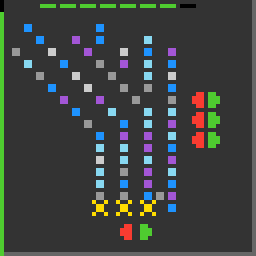

lp85
Click arrows to move tile colours around until every socket holds the colour it wants.
8 levels · 6 rules · all levels replayed in Lean
How it plays
Coloured ceramic tiles are laid on a grid, with several arrows around it and a few sockets, each marked with the colour it wants. Click one arrow, and the colours at a fixed set of positions are moved once as a whole: a run on a belt moves one cell, a star's ring or ray turns one cell, and swap buttons swap in pairs. Which cells are moved, and where to, is decided by the layout, regardless of the colours at the time; a click away from an arrow leaves the picture unchanged. When every socket is matched with the colour it wants, the level is cleared. Colours only change places, and the number of tiles of each colour never changes. The counter bar on the left records the number of arrow hits in this level; clicking on empty space does not count.


Replay
The certified run that cleared every level, one action at a time. Beside each step: the rules of the model that explain it.
Explained by
Keys: ← → step, Space play / pause. A click is circled; cells that changed are outlined.
Model
The final model: 6 object types and 6 rules. Each rule is a Python check against every recorded step; most are also Lean definitions.
Object types
- Grid
gridThe grid of cells that holds the tiles. - Tile cells
cellsWhich grid cells hold a tile. - Arrows
buttonsThe position and direction of each arrow. - Sockets
slotsEach socket's cell and the colour it wants. - Colours
colorsThe current colour of each tile. - Counter bar
barThe bar on the left, recording this level's arrow hits.
Rules
press_permutesClicking an arrow moves colours once by that arrow's fixed table; other cells stay.Python
from __future__ import annotations from derive import wiring as W from .._common import level_changed, not_click, pressed … … FROM = ["belt_rot_a", "belt_rot_b", "belt_parallel", "off_belt_static", "star_rotate", "star_radial", "hub_swap", "off_star_static", "panel_all_rot", "panel_rank_rot", "off_panel_static"] HISTORY = [ … … … … … … … … … ] def scope_(w, action, nw, ctx): if not_click(action): … if level_changed(ctx): … i = pressed(w, action) if i is None: … if W.perm(w, i) is None: … return None def assert_(w, action, nw, ctx) -> bool: i = pressed(w, action) return nw.colors == W.apply(w.colors, W.perm(w, i))Lean
import Obj.World def pressPermutes (b : Button) (s : Colors) : Colors := b.perm.map (fun i => s.getD i 0)dead_clickA click away from an arrow leaves the picture unchanged.Python
from __future__ import annotations from .._common import level_changed, not_click, pressed … … HISTORY = [ … … … ] def scope_(w, action, nw, ctx): if not_click(action): … if level_changed(ctx): … if pressed(w, action) is not None: … return None def assert_(w, action, nw, ctx) -> bool: return nw == wLean
import Obj.World def deadClick (s : Colors) : Colors := swin_iff_slotsThe level is cleared exactly when every socket holds the colour it wants.Python
from __future__ import annotations from derive import goal as G from derive import wiring as W from .._common import level_changed, not_click, pressed … … … FROM = ["win_slots_done", "no_win_without_slots"] HISTORY = [ … … … … ] def scope_(w, action, nw, ctx): if not_click(action): … i = pressed(w, action) if i is not None and W.perm(w, i) is None: … return None def assert_(w, action, nw, ctx) -> bool: if level_changed(ctx): i = pressed(w, action) after = w.colors if i is None else W.apply(w.colors, W.perm(w, i)) return G.slots_filled(w, after) return not G.slots_filled(nw)Lean
import Obj.World def isGoal (bd : Board) (s : Colors) : Bool := !bd.slots.isEmpty && bd.slots.all (fun sl => s[sl.cell]? == some sl.mark)board_staticWithin a level, grid, tile cells, arrows and sockets never change.Python
from __future__ import annotations from .._common import level_changed, not_click … … HISTORY = [ … … … ] def scope_(w, action, nw, ctx): if not_click(action): … if level_changed(ctx): … return None def assert_(w, action, nw, ctx) -> bool: return (w.grid, w.cells, w.buttons, w.slots) == (nw.grid, nw.cells, nw.buttons, nw.slots)Lean
import Obj.World import Step def World.next (w : World) (a : Act) : Option World := match step w.board w.colors a with | .ok s => some { board := w.board, colors := s } | .won => none theorem board_static (w w' : World) (a : Act) (h : w.next a = some w') : w'.board = w.board := by unfold World.next at h split at h · cases h; rfl · cases hbar_never_dropsAn arrow hit never shortens the counter bar; each fill amount is fixed per level.Python
from __future__ import annotations from .._common import level_changed, not_click, pressed … … … … HISTORY = [ … … … ] def scope_(w, action, nw, ctx): if not_click(action): … if level_changed(ctx): … if pressed(w, action) is None: … return None def assert_(w, action, nw, ctx) -> bool: return nw.bar >= w.barnew_level_bar_emptyEntering a new level with more levels ahead starts the counter bar empty.Python
from __future__ import annotations from .._common import level_changed, not_click … … … FROM = ["level_up_resets_bar"] HISTORY = [ … … ] def scope_(w, action, nw, ctx): if not_click(action): … if not level_changed(ctx): … if ctx["state_next"] != "NOT_FINISHED": … return None def assert_(w, action, nw, ctx) -> bool: return nw.bar == 0
Code is shown with comments and the agent's notes removed; the files as written are under Files.
Proof
For every level, Lean starts from the level's first screen, applies the model's rules to the certified actions, and checks that every computed state agrees with the recorded frame and that the last one wins. Each theorem is closed by the Lean kernel.
Every level can be won
theorem L0_winnable : Winnable (L0_start : World) := …theorem L1_winnable : Winnable (L1_start : World) := …theorem L2_winnable : Winnable (L2_start : World) := …theorem L3_winnable : Winnable (L3_start : World) := …theorem L4_winnable : Winnable (L4_start : World) := …theorem L5_winnable : Winnable (L5_start : World) := …theorem L6_winnable : Winnable (L6_start : World) := …theorem L7_winnable : Winnable (L7_start : World) := …theorem missingNear_winnable : Winnable (missingNear : World) := …theorem frozenNear_winnable : Winnable (frozenNear : World) := …What cannot be won
theorem unsolvable_missing (w : World) (sl : Slot) (hs : sl ∈ w.board.slots)
(hwf : ∀ b ∈ w.board.buttons, b.wf w.colors.length) (h0 : w.colors.count sl.mark = 0) : Unsolvable w := …theorem unsolvable_frozen (w : World) (sl : Slot) (hs : sl ∈ w.board.slots)
(hf : Frozen w.board w.colors.length sl.cell) (hk : sl.cell < w.colors.length)
(hne : w.colors[sl.cell]? ≠ some sl.mark) : Unsolvable w := …theorem missingScene_unsolvable : Unsolvable (missingScene : World) := …theorem frozenScene_unsolvable : Unsolvable (frozenScene : World) := …Statements only; the proofs and the full Lean project are under Files.
Files
The files as written by the agent, unedited: the recorded run, the concept book, the concept sources, and the Lean project.
Download lp85.zip 0.2 MB · 45 files